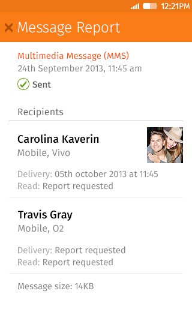
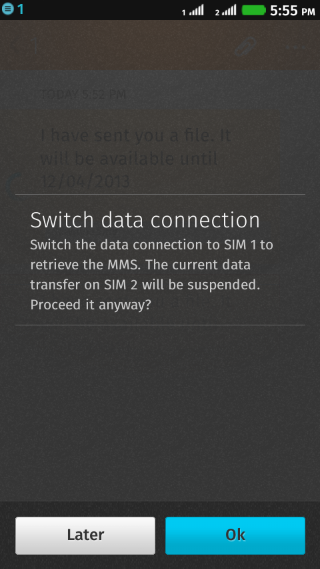

2013 Q4 review
schung@mozilla.com

- Gaia Message app
- MMS feature imlemetation
- DSDS related issue
- Bugs fixing & verifying
- Code review
- Other Comms agile team feature
Major feature in message app
- Message delivery report panel

- Refactor: Modulize third view of message spp
DSDS feature in message app
- DSDS mms message retrieval handling

- Refactor: Modulize error message event handling
- v1.2 incoming call lockscreen refinement and unit test
- v1.3 slider module integration
- Other minor tasks:
- Message app bug mentoring
- Handling partner's MMS requirement
- DSDS related knowledge
- App Component Modulize
- DataStore API for message thread DB
- Better handling in message app
- Support new feature & DSDS features in comms agile team
- Familiar with other TEF controlled apps(contacts, FTU)
- Message app performance tuning and profiling
- Integration test
- Moving thread DB to Gaia